A stroke of genius
 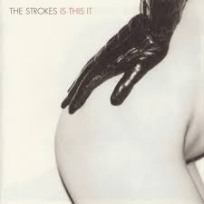
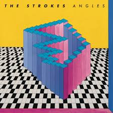
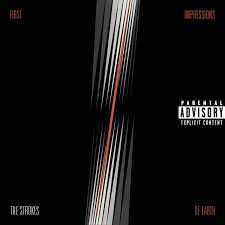
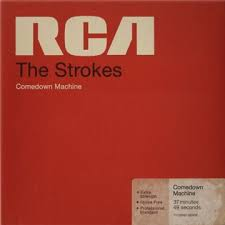
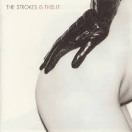
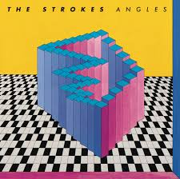
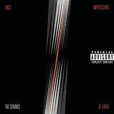
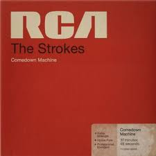
Check it out on Spotify and Apple Music.
Historia
Los comienzos
La banda se formó en Nueva York a finales de los 90, cuando Julian Casablancas reunió a sus amigos Albert Hammond Jr., Nick Valensi, Nikolai Fraiture y Fabrizio Moretti. Con influencias del garage rock y el punk, empezaron a tocar en bares pequeños del Lower East Side.
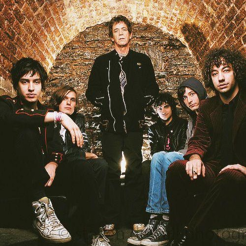El salto a la fama
En 2001 lanzaron Is This It, considerado uno de los discos más importantes de la década. Canciones como “Last Nite” y “Someday” los convirtieron en referentes del revival del rock neoyorquino, junto con bandas como The White Stripes y The Libertines.
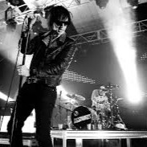Evolución y legado
A lo largo de los años, The Strokes experimentaron con distintos sonidos, desde el garage hasta lo electrónico, en discos como First Impressions of Earth y The New Abnormal. A pesar de pausas y proyectos solistas, siguen siendo una de las bandas más influyentes del rock moderno.
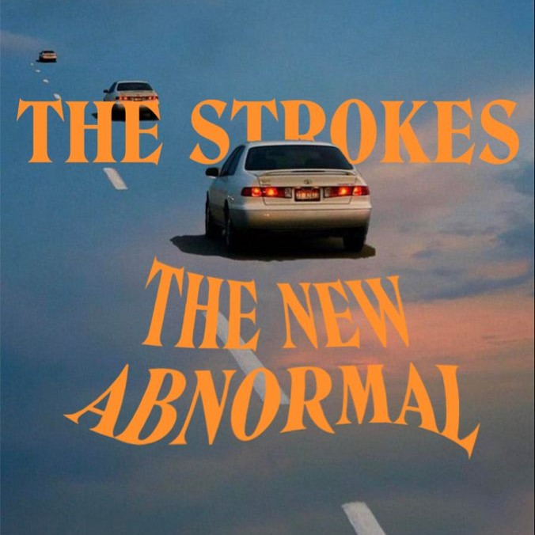Comentarios
"The Strokes son la última gran banda en redefinir el rock de Nueva York para una nueva generación."
- Rolling Stone
"Su debut *Is This It* cambió mi vida, fue como escuchar algo fresco pero clásico al mismo tiempo."
- @fanaticodelrock
"Julian Casablancas tiene una de las voces más reconocibles e influyentes del siglo XXI."
- NME
"Cada vez que suena 'Last Nite' vuelvo a mis 17 años, es pura nostalgia."
- María L., fan en Twitter
"El revival del garage rock no habría existido sin ellos, punto."
- Pitchfork
"Los vi en vivo y la energía que transmiten es única, todos cantábamos como si fuera un himno."
- Juan P., fan argentino
"Con cada disco se reinventan, pero siempre mantienen esa esencia callejera de Nueva York."
- The Guardian
"Mi playlist no está completa si no tiene al menos un tema de The Strokes."
- Sofi R., Spotify user
"Lograron que el rock volviera a sonar cool en los 2000, y todavía siguen marcando tendencia."
- Billboard